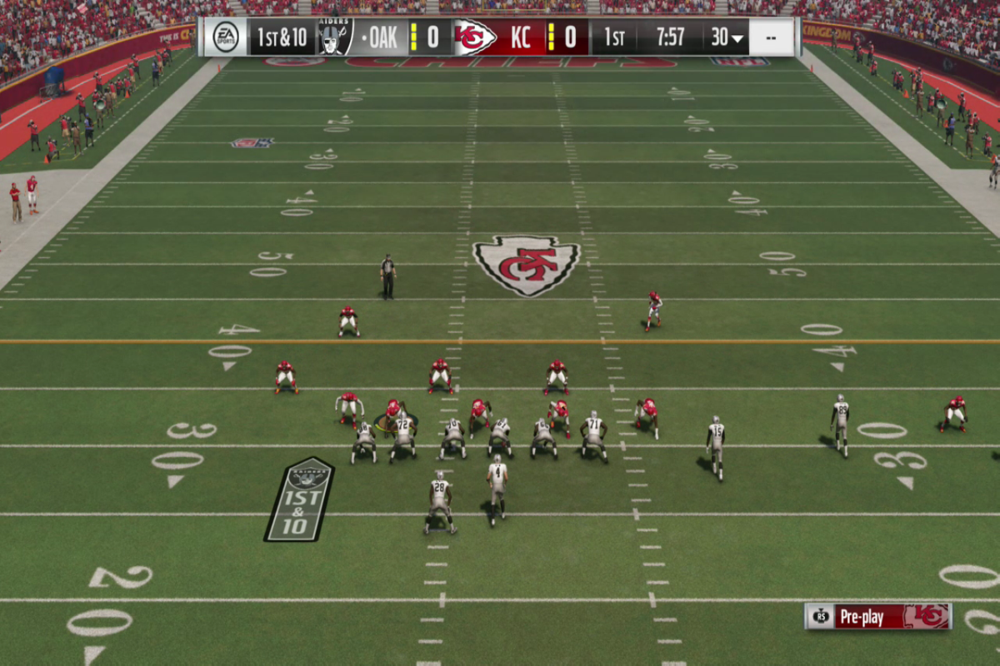

Stats
Boring, but Important
5
Scored 5 on Four AP Exams, Including Calculus AB/BC and Physics I
7
Fluent in 7 different Coding Languages, includin Python and C++
36
Perfect Score On The ACT, February 2018
19th
Class Rank, as of the End of Sophomore Year (Top ~3%)
24
Achieved an A Grade in 24 of My Classes in High School
1560
SAT Score, December 2017
2
AP Scholar Award 2 Years in a Row, 2017 and 2018
2017 National Academy of Future Scientists and Technologists Award of Excellence
4.53
Weighted GPA, as of the End of Sophomore Year
1480
PSAT/NMSQT Score, Fall 2017
Research and Work Experience
I have had a research internship at the North Carolina State University Department of Statistics under Professor Brian Reich and Professor Eric Laber since February 2017. I have been
actively involved in the research process since the very beginning. My first project was an individual project with guidance from Dr. Neal Grantham, a graduate student at the time. I created a model using
the coding language R to predict features of a home based on a fungal swap of the house. I presented my findings in a research poster at the 2017 State of North Carolina Undergraduate Research and
Creativity Symposium titled “Inferring Home Features from Indoor and Outdoor Microbial Fungi”, which you can download a PDF of here.


After completing the fungi project, I briefly worked with Benjamin Hu on a project to improve the accuracy of Zillow’s home pricing estimator. Currently, I am working with Nick Kapur and James Gilman to
improve NFL play-calling using the video game Madden. We simulate American-football games on a gaming console, collecting vast amounts of data, and use Python to develop a model that will call the plays.